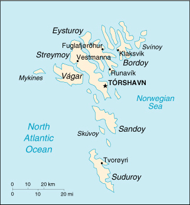

(part of the Kingdom of Denmark)
|
Faroe Islands (part of the Kingdom of Denmark) |
|
| Introduction Geography People Government Economy Communications Transportation Military Transnational Issues | ||
|  | ||
| Faroe Islands | Introduction | Top of Page |
| Background: | The population of the Faroe Islands is largely descended from Viking settlers who arrived in the 9th century. The islands have been connected politically to Denmark since the 14th century. A high degree of self-government was attained in 1948. |
| Faroe Islands | Geography | Top of Page |
| Location: | Northern Europe, island group between the Norwegian Sea and the North Atlantic Ocean, about one-half of the way from Iceland to Norway |
| Geographic coordinates: | 62 00 N, 7 00 W |
| Map references: | Europe |
| Area: |
total:
1,399 sq km
land: 1,399 sq km water: 0 sq km (some lakes and streams) |
| Area - comparative: | eight times the size of Washington, DC |
| Land boundaries: | 0 km |
| Coastline: | 1,117 km |
| Maritime claims: |
continental shelf:
200 NM or agreed boundaries or median line
exclusive fishing zone: 200 NM or agreed boundaries or median line territorial sea: 3 NM |
| Climate: | mild winters, cool summers; usually overcast; foggy, windy |
| Terrain: | rugged, rocky, some low peaks; cliffs along most of coast |
| Elevation extremes: |
lowest point:
Atlantic Ocean 0 m
highest point: Slaettaratindur 882 m |
| Natural resources: | fish, whales, hydropower |
| Land use: |
arable land:
6%
permanent crops: 0% permanent pastures: 0% forests and woodland: 0% other: 94% (1996) |
| Irrigated land: | 0 sq km |
| Natural hazards: | NA |
| Environment - current issues: | NA |
| Geography - note: | archipelago of 17 inhabited islands and one uninhabited island, and a few uninhabited islets; strategically located along important sea lanes in northeastern Atlantic; precipitous terrain limits habitation to small coastal lowlands |
| Faroe Islands | People | Top of Page |
| Population: | 45,661 (July 2001 est.) |
| Age structure: |
0-14 years:
22.62% (male 5,193; female 5,136)
15-64 years: 63.64% (male 15,463; female 13,596) 65 years and over: 13.74% (male 2,802; female 3,471) (2001 est.) |
| Population growth rate: | 0.78% (2001 est.) |
| Birth rate: | 13.64 births/1,000 population (2001 est.) |
| Death rate: | 8.69 deaths/1,000 population (2001 est.) |
| Net migration rate: | 2.89 migrant(s)/1,000 population (2001 est.) |
| Sex ratio: |
at birth:
1 male(s)/female
under 15 years: 1.01 male(s)/female 15-64 years: 1.14 male(s)/female 65 years and over: 0.81 male(s)/female total population: 1.06 male(s)/female (2001 est.) |
| Infant mortality rate: | 6.8 deaths/1,000 live births (2001 est.) |
| Life expectancy at birth: |
total population:
78.59 years
male: 75.12 years female: 82.06 years |
| Total fertility rate: | 2.3 children born/woman (2001 est.) |
| HIV/AIDS - adult prevalence rate: | NA% |
| HIV/AIDS - people living with HIV/AIDS: | NA |
| HIV/AIDS - deaths: | NA |
| Nationality: |
noun:
Faroese (singular and plural)
adjective: Faroese |
| Ethnic groups: | Scandinavian |
| Religions: | Evangelical Lutheran |
| Languages: | Faroese (derived from Old Norse), Danish |
| Literacy: |
definition:
NA
total population: NA% male: NA% female: NA% note: similar to Denmark proper |
| Faroe Islands | Government | Top of Page |
| Country name: |
conventional long form:
none
conventional short form: Faroe Islands local long form: none local short form: Foroyar |
| Dependency status: | part of the Kingdom of Denmark; self-governing overseas administrative division of Denmark since 1948 |
| Government type: | NA |
| Capital: | Torshavn |
| Administrative divisions: | none (part of the Kingdom of Denmark; self-governing overseas administrative division of Denmark); there are no first-order administrative divisions as defined by the US Government, but there are 49 municipalities |
| Independence: | none (part of the Kingdom of Denmark; self-governing overseas administrative division of Denmark) |
| National holiday: | Olaifest, 29 July |
| Constitution: | 5 June 1953 (Danish constitution) |
| Legal system: | Danish |
| Suffrage: | 18 years of age; universal |
| Executive branch: |
chief of state:
Queen MARGRETHE II of Denmark (since 14 January 1972), represented by High Commissioner Ms. Vibeke LARSEN, chief administrative officer (since NA)
head of government: Prime Minister Anfinn KALLSBERG (since 15 May 1998) cabinet: Landsstyri appointed by the prime minister elections: the monarch is hereditary; high commissioner appointed by the monarch; following legislative elections, the leader of the party that wins the most seats is usually elected prime minister by the Faroese Parliament; election last held 30 April 1998 (next to be held no later than April 2002) election results: Anfinn KALLSBERG elected prime minister; percent of parliamentary vote - 52.8% note: coalition of People's Party, Republican Party and Home Rule Party |
| Legislative branch: |
unicameral Faroese Parliament or Logting (32 seats; members are elected by popular vote on a proportional basis from the seven constituencies to serve four-year terms)
elections: last held 30 April 1998 (next to be held not later than April 2002) election results: percent of vote by party - Republican Party 23.8%, People's Party 21.3%, Social Democratic Party 21.9%, Union Party 18%, Home Rue Party 7.7%, Center Party 4.1%; seats by party - Republican Party 8, People's Party 8, Social Democratic Party 7, Union Party 6, Home Rule Party 2, Center Party 1 note: election of 2 seats to the Danish Parliament was last held on 11 March 1998 (next to be held not later than March 2002); results - percent of vote by party - NA; seats by party - Social Democratic Party 1, People's Party 1 |
| Judicial branch: | none |
| Political parties and leaders: | Center Party [Jenis A. RANA]; Home Rule Party [Helena Dam a NEYSTABO]; People's Party [Oli BRECKMANN]; Republican Party [Hogni HOYDAL]; Social Democratic Party [Joannes EIDESGAARD]; Union Party [Edmund JOENSEN] |
| Political pressure groups and leaders: | NA |
| International organization participation: | NC, NIB |
| Diplomatic representation in the US: | none (self-governing overseas administrative division of Denmark) |
| Diplomatic representation from the US: | none (self-governing overseas administrative division of Denmark) |
| Flag description: | white with a red cross outlined in blue that extends to the edges of the flag; the vertical part of the cross is shifted to the hoist side in the style of the Dannebrog (Danish flag) |
| Faroe Islands | Economy | Top of Page |
| Economy - overview: | The Faroese economy has had a strong performance since 1994, mostly as a result of increasing fish landings and high and stable export prices. Unemployment is falling and there are signs of labor shortages in several sectors. The positive economic development has helped the Faroese Home Rule Government produce increasing budget surpluses which in turn help to reduce the large public debt, most of it owed to Denmark. However, the total dependence on fishing makes the Faroese economy extremely vulnerable, and the present fishing efforts appear in excess of what is required to ensure a sustainable level of fishing in the long term. Oil finds close to the Faroese area give hope for deposits in the immediate Faroese area, which may eventually lay the basis for a more diversified economy and thus less dependence on Denmark and Danish economic assistance. Aided by a substantial annual subsidy (15% of GDP) from Denmark, the Faroese have a standard of living not far below the Danes and other Scandinavians. |
| GDP: | purchasing power parity - $910 million (2000 est.) |
| GDP - real growth rate: | 5% (2000 est.) |
| GDP - per capita: | purchasing power parity - $20,000 (2000 est.) |
| GDP - composition by sector: |
agriculture:
27%
industry: 11% services: 62% (1999) |
| Population below poverty line: | NA% |
| Household income or consumption by percentage share: |
lowest 10%:
NA%
highest 10%: NA% |
| Inflation rate (consumer prices): | 5.1% (1999) |
| Labor force: | 24,250 (October 2000) |
| Labor force - by occupation: | fishing, fish processing, and manufacturing 33%, construction and private services 33%, public services 34% |
| Unemployment rate: | 1% (October 2000) |
| Budget: |
revenues:
$488 million
expenditures: $484 million, including capital expenditures of $21 million (1999) |
| Industries: | fishing, fish processing, shipbuilding, construction, handicrafts |
| Industrial production growth rate: | 8% (1999 est.) |
| Electricity - production: | 170 million kWh (1999) |
| Electricity - production by source: |
fossil fuel:
58.82%
hydro: 41.18% nuclear: 0% other: 0% (1999) |
| Electricity - consumption: | 158.1 million kWh (1999) |
| Electricity - exports: | 0 kWh (1999) |
| Electricity - imports: | 0 kWh (1999) |
| Agriculture - products: | milk, potatoes, vegetables; sheep; salmon, other fish |
| Exports: | $471 million (f.o.b., 1999) |
| Exports - commodities: | fish and fish products 94%, stamps, ships (1999) |
| Exports - partners: | Denmark 32%, UK 21%, France 9%, Germany 7%, Iceland 5%, US 5% (1996) |
| Imports: | $469 million (c.i.f., 1999) |
| Imports - commodities: | machinery and transport equipment 29%, consumer goods 36%, raw materials and semi-manufactures 32%, fuels, fish and salt (1999) |
| Imports - partners: | Denmark 28%, Norway 26%, Germany 7%, UK 6% Sweden 5%, Iceland 4%, US (1999) |
| Debt - external: | $64 million (1999) |
| Economic aid - recipient: | $135 million (annual subsidy from Denmark) (1999) |
| Currency: | Danish krone (DKK) |
| Currency code: | DKK |
| Exchange rates: | Danish kroner per US dollar - 7.951 (January 2001), 8.093 (2000), 6.976 (1999), 6.701 (1998), 6.604 (1997), 5.799 (1966) |
| Fiscal year: | calendar year |
| Faroe Islands | Communications | Top of Page |
| Telephones - main lines in use: | 24,851 (1999) |
| Telephones - mobile cellular: | 10,761 (1999) |
| Telephone system: |
general assessment:
good international communications; good domestic facilities
domestic: digitalization was completed in 1998; both NMT (analog) and GSM (digital) mobile telephone systems are installed international: satellite earth stations - 1 Orion; 1 fiber-optic submarine cable to the Shetland Islands, linking the Faroe Islands with Denmark and Iceland; fiber-optic submarine cable connection to Canada-Europe cable |
| Radio broadcast stations: | AM 1, FM 13, shortwave 0 (1998) |
| Radios: | 26,000 (1997) |
| Television broadcast stations: | 3 (plus 43 low-power repeaters) (September 1995) |
| Televisions: | 15,000 (1997) |
| Internet country code: | .fo |
| Internet Service Providers (ISPs): | 2 (2000) |
| Internet users: | 3,000 (2000) |
| Faroe Islands | Transportation | Top of Page |
| Railways: | 0 km |
| Highways: |
total:
463 km
paved: 454 km unpaved: 9 km (1999) |
| Waterways: | none |
| Ports and harbors: | Torshavn, Klaksvik, Tvoroyri, Runavik, Fuglafjorour |
| Merchant marine: |
total:
6 ships (1,000 GRT or over) totaling 23,247 GRT/11,736 DWT
ships by type: cargo 2, petroleum tanker 1, refrigerated cargo 1, roll on/roll off 1, short-sea passenger 1 (2000 est.) |
| Airports: | 1 (2000 est.) |
| Airports - with paved runways: |
total:
1
914 to 1,523 m: 1 (2000 est.) |
| Faroe Islands | Military | Top of Page |
| Military branches: | defense is the responsibility of Denmark; no organized native military forces; only a small Police Force and Coast Guard are maintained |
| Military expenditures - dollar figure: | $NA |
| Military expenditures - percent of GDP: | NA% |
| Military - note: | defense is the responsibility of Denmark |
| Faroe Islands | Transnational Issues | Top of Page |
| Disputes - international: | Faroese are considering proposals for full independence |
{kind=link}
{kind=link}